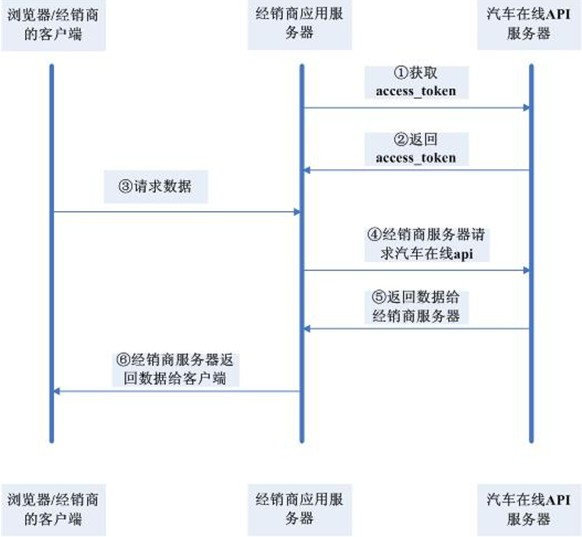

1.经销商自己有一套系统，想在这个基础上扩充相关GPS功能。
2.经销商的客户的账号由经销商自己的系统管理，用于登录经销商的系统。
经销商系统的账号和汽车在线平台的账号对应关系，经销商自己管理，经销商使用汽车在线平台的账号来获取相应设备数据。
设备IMEI由经销商自己的系统管理，经销商可根据imei获取设备数据。
3.经销商的应用服务器调用API接口。
经销商提供他的汽车在线平台登陆账号和密码来获取调用api接口访问令牌(access_token)。
经销商在应用服务器端使用该access_token访问OPEN API接口获取所需的数据。
数据交互流程图如下：

| 参数名 | 参数类型 | 是否必需 | 描述 |
|---|---|---|---|
| access_token | string | 是 | 访问令牌，表明其是一个合法第三方，调用汽车在线的任何Restful Open API。获取方法请参考4.1。请勿在服务端代码以外的地方使用该access_token |
| account | string | 是 | 您申请appkey时所用的汽车在线的登录账号 |
| format | string | 否 | 默认json(暂时只支持JSON) |
| time | number | 是 | UNIX时间戳，10位，精确到秒。一般是发请求时的时间。 |
| callback | string | 否 | 第三方通过JS调用Open API时可以通过指定callback参数来要求平台端返回JSONP代码，以解决跨域问题。callback参数值只能是 字母 数字 下划线。 |
所有的请求和响应数据编码皆为utf-8格式，url里的所有参数值请做URIEncode编码；
各个参数请进行URL 编码(UTF-8)，编码时请遵守 RFC 1738。
JSON
Content-type: text/html; charset=utf-8
JSONP
Content-type: text/javascript; charset=utf-8
接口说明：
获取一个访问。
URL：
http://api.gpsoo.net/1/auth/access_token?
HTTP请求方式：
GET/POST
输入参数说明：
| 参数名 | 参数类型 | 是否必需 | 默认值 | 描述 |
|---|---|---|---|---|
| account | string | 是 | 无 | 经销商的账号 |
| time | number | 是 | 无 | UNIX时间戳，10位，精确到秒 |
| signature | string | 是 | 无 | 加密的签名，算法为:md5(md5(经销商账号的密码) + time) |
请求示例：
http://api.gpsoo.net/1/auth/access_token?account=testacc&time=1366786321&signature=e9b39daacc811af7109ef1e11a6583bd
返回参数说明：
| 参数名 | 参数类型 | 描述 |
|---|---|---|
| ret | uint | 返回码： 0: 正确返回 其它: 失败。错误码说明 |
| msg | string | 如果ret不为0，会有相应的错误信息提示 |
| access_token | string | 后续接口访问的访问令牌 |
| expires_in | number | access token的有效期，以秒为单位 |
正确返回示例：
{
"ret":0,
"msg":"",
"access_token"：" 13667863217ac80dbbaaf3c74cec21f6d6867bff43",
"expires_in":7200
}
错误返回示例：
{"ret":20001,"msg":"账号或密码错误"}
特别说明：
(1) 请勿在服务端代码以外的地方使用该access_token
(2) 调用接口的时候返回10006 (access_token已过期) 错误，就需要重新请求access_token
接口说明：
获取一个账户名下所有设备最新位置信息
URL：
http://api.gpsoo.net/1/account/monitor
HTTP请求方式：
GET/POST
输入参数说明：
（1）通用参数
参见：通用参数
（2）私有参数
| 参数名 | 参数类型 | 是否必需 | 默认值 | 描述 |
|---|---|---|---|---|
| target | string | 是 | 无 | 要监控的账户(在汽车在线平台的账号)，目标账号名下最多只能有100个设备 |
| map_type | string | 否 | 无 | 如果要显示在百度地图上，map_type=BAIDU此时返回的经纬度将经过baidu校准方式校准 如果要显示在google地图上，map_type=GOOGLE，此时返回的经纬度将经过google校准方式校准 map_type如果不填，则返回原始经纬度 |
请求示例：
http://api.gpsoo.net/1/account/monitor?access_token=0011045701369822736adb020814946df1ded1c8681d026d5c5&map_type=BAIDU&target=mycar&account=testacc&time= 1366786321
返回参数说明：
| 参数名 | 参数类型 | 描述 |
|---|---|---|
| ret | uint | 返回码 0: 正确返回 其它: 失败。错误码说明 |
| msg | string | 如果ret不为0，会有相应的错误信息提示 |
| imei | string | 设备IMEI |
| device_info | uint | 0:正常数据 1:设备未上线 2:设备已过期 3:设备离线 |
| gps_time | number | 定位时间 GPS定位时间 UTC秒数(如果设备过期，值为0) |
| sys_ime | number | Gps数据的系统时间 UTC秒数(如果设备过期，值为0) |
| heart_time | number | 心跳时间 UTC秒数(如果设备过期，值为0) |
| server_time | number | 当前服务器时间 UTC秒数(如果设备过期，值为0) |
| lng | number | 经度 (如果设备过期，值为0) |
| lat | number | 纬度 (如果设备过期，值为0) |
| course | number | 航向(正北方向为0度，顺时针方向增大。最大值360度) (如果设备过期，值为0) |
| speed | number | 速度 (单位:km/h) (如果设备过期，值为-1) |
| status | string | ACC等信息 (如果设备过期，值为空字符串) |
正确返回示例：
{
"ret":0,
"msg":"",
"data"： [{
"imei": "353419031939627",
"device_info":0,
"gps_time": 1318409927,
"sys_time": 1318409919,
"heart_time": 1318409919,
"server_time": 1318428292,
"lng": 113.91919,
"lat": 22.54546,
"course": 100,
"speed": 80},
{
"imei": "353419032982170",
"device_info":0,
"gps_time": 1318409927,
"sys_time": 1318409919,
"heart_time": 1318409919,
"server_time": 1318428292,
"lng": 113.91919,
"lat": 22.54546,
"course": 100,
"speed": 80}]
}
错误返回示例：
{"ret":20005,"msg":"无权查看该账号信息(mycar)"}
接口说明：
获取单个/批量设备最新位置信息
URL：
http://api.gpsoo.net/1/devices/tracking
HTTP请求方式：
GET/POST
输入参数说明：
（1）通用参数
参见：通用参数
（2）私有参数
| 参数名 | 参数类型 | 是否必需 | 默认值 | 描述 |
|---|---|---|---|---|
| imeis | string | 是 | 无 | 设备imei号，多个中间用英文逗号隔开； 如果设备过多，建议采用POST方式(一次最多100个IMEI) |
| map_type | string | 否 | 无 | 如果要显示在百度地图上，map_type=BAIDU此时返回的经纬度将经过baidu校准方式校准 如果要显示在google地图上，map_type=GOOGLE，此时返回的经纬度将经过google校准方式校准 map_type如果不填，则返回原始经纬度 |
请求示例：
http://api.gpsoo.net/1/devices/tracking?access_token=0011045701369822736adb020814946df1ded1c8681d026d5c5&map_type=BAIDU
&account=testacc&imeis=353419031939627,353419032982170&time=1366786321
返回参数说明：
| 参数名 | 参数类型 | 描述 |
|---|---|---|
| ret | uint | 返回码 0: 正确返回 其它: 失败。错误码说明 |
| msg | string | 如果ret不为0，会有相应的错误信息提示 |
| imei | string | 设备imei |
| device_info | uint | 0:正常数据 1:设备未上线 2:设备已过期 3:设备离线 |
| gps_time | number | 定位时间 GPS定位时间 UTC秒数(如果设备过期，值为0) |
| sys_time | number | 系统时间 UTC秒数(如果设备过期，值为0) |
| heart_time | number | 心跳时间 UTC秒数(如果设备过期，值为0) |
| server_time | number | 当前服务器时间 UTC秒数(如果设备过期，值为0) |
| lng | number | 经度 (如果设备过期，值为0) |
| lat | number | 纬度 (如果设备过期，值为0) |
| course | number | 航向(正北方向为0度，顺时针方向增大。最大值360度) (如果设备过期，值为0) |
| speed | number | 速度 (单位:km/h) (如果设备过期，值为-1，如果设备还未上线值为-9) |
| status | string | ACC等信息 (如果设备过期，值为空字符串) |
正确返回示例：
{
"ret":0,
"msg":"",
"data"： [{
"imei": "353419031939627",
"device_info":0,
"gps_time": 1318409927,
"sys_time": 1318409919,
"heart_time": 1318409919,
"server_time": 1318428292,
"lng": 113.91919,
"lat": 22.54546,
"course": 100,
"speed": 80"},
{
"imei": "353419032982170",
"device_info":0,
"gps_time": 1318409927,
"gps_time": 1318409919,
"heart_time": 1318409919,
"server_time": 1318428292,
"lng": 113.91919,
"lat": 22.54546,
"course": 100,
"speed": 80}]
}
错误返回示例：
{"ret":20007,"msg":"IMEI不存在(353419031939627)"}
接口说明：
获取设备历史轨迹位置信息
URL：
http://api.gpsoo.net/1/devices/history
HTTP请求方式：
GET
输入参数说明：
（1）通用参数
参见：通用参数
（2）私有参数
| 参数名 | 参数类型 | 是否必需 | 默认值 | 描述 |
|---|---|---|---|---|
| imei | string | 是 | 无 | 设备imei(一次只能一个IMEI) |
| map_type | string | 否 | 无 | 如果要显示在百度地图上，map_type=BAIDU此时返回的经纬度将经过baidu校准方式校准 如果要显示在google地图上，map_type=GOOGLE，此时返回的经纬度将经过google校准方式校准 map_type如果不填/其他值，则返回原始经纬度 |
| begin_time | number | 是 | 无 | 开始时间(UTC) 秒数 |
| end_time | number | 是 | 无 | 结束时间(UTC) 秒数。end_time不应大于当前时间。 |
| limit | number | 否 | 1000 | 每次请求数据数量(一次最大1000条) |
| time | number | 是 | 无 | UNIX时间戳。如果请求较长的时间段，如果点数很多的话，需要多次发请求获取，每次请求的begin_time很end_time参数保持和第一次的一样，time参数传上一次请求返回里最后一个点的gps_time。 |
请求示例：
http://api.gpsoo.net/1/devices/history?access_token=0011045701369822736adb020814946df1ded1c8681d026d5c5&map_type=BAIDU
&account=testacc&imei=353419031939627&time=1366786321&begin_time=1452754256&end_time=14527547562
返回参数说明：
| 参数名 | 参数类型 | 描述 |
|---|---|---|
| ret | uint | 返回码 0: 正确返回 其它: 失败。错误码说明 |
| msg | string | 如果ret不为0，会有相应的错误信息提示 |
| gps_time | number | gps定位时间 UTC秒数 |
| lng | number | 经度 |
| lat | number | 纬度 |
| course | number | 航向(正北方向为0度，顺时针方向增大。最大值360度) |
| speed | number | 速度 (单位: km/h) |
正确返回示例：
{
"ret":0,
"msg":"",
"data":[{
"gps_time": 1318409927,
"lng": 113.91919,
"lat": 22.54546,
"course": 200,
"speed": 80
},{
"gps_time": 1318410927,
"lng": 113.91919,
"lat": 22.54546,
"course": 180,
"speed": 80}]
}
错误返回示例：
{"ret":20007,"msg":"IMEI不存在{353419031939627}"}
{"ret":20010,"msg":"该设备已过期{353419031939627}"}
特别说明：
每次获取数据最多只能获取1000条，如果想回放很长一段时间的历史轨迹，需要不断的获取数据，每次获取1000条，然后以最后一条数据的定位时间作为起始时间再次请求获取数据，如果获取的数据少于1000条，表示这段时间内的gps数据已经全部获取完毕，不需要再发请求。
接口说明：
根据经纬度得到中文地址
URL：
http://api.gpsoo.net/1/tool/address/
HTTP请求方式：
GET
输入参数说明：
（1）通用参数
参见：通用参数
（2）私有参数
| 参数名 | 参数类型 | 是否必需 | 默认值 | 描述 |
|---|---|---|---|---|
| lng | number | 是 | 无 | 经度 |
| lat | number | 是 | 无 | 纬度 |
| lang | string | 否 | 无 | 语言 简体中文=zh-cn 默认简体中文，目前仅支持简体中文 |
| map_type | string | 否 | 无 | 用户根据上传的GPS经纬度校准，选用不同的map_type map_type=BAIDU经纬度参数经过百度校准过 map_type =GOOGLE经纬度参数经过google校准过 非BAIDU ，GOOGLE表示原始经纬度，未经任何校准 |
请求示例：
http://api.gpsoo.net/1/tool/address?lng=114.342155&lat=30.682749&access_token=0011045701369822736adb020814946df1ded1c8681d026d5c5
&account=testacc&time=1366786321
表示请求经度为114.342155，纬度为30.682749的地址 (经纬度是原始值)
http://api.gpsoo.net/1/tool/address?lng=114.343088&lat=30.682888&access_token=0011045701369822736adb020814946df1ded1c8681d026d5c5
&account=testacc&map_type=BAIDU&time= 1366786321
表示请求经度为114.343088，纬度为30.682888的地址 (经纬度不是原始值，该经纬度是经过了百度校准过的经纬度)
http://api.gpsoo.net/1/tool/address?lng=114.343231&lat=30.682345&access_token=0011045701369822736adb020814946df1ded1c8681d026d5c5
&account=testacc&map_type=BAIDU&time= 1366786321
表示请求经度为114.343231，纬度为30.682345的地址 (经纬度不是原始值，该经纬度是经过了GOOGLE校准过的经纬度)
返回参数说明：
| 参数名 | 参数类型 | 描述 |
|---|---|---|
| ret | uint | 返回码 0: 正确返回 其它: 失败。错误码说明 |
| msg | string | 如果ret不为0，会有相应的错误信息提示 |
| address | string | 返回的地址信息 |
正确返回示例：
{
"ret":0,
"msg":"",
"address":"湖北省武汉市堤边路.离新队约78米. "
}
错误返回示例：
{"ret":20002,"msg":"缺失必选参数(lng) ,请参考API文档"}
接口说明：
查询账号下所有设备的相关信息
URL：
http://api.gpsoo.net/1/account/devinfo/
HTTP请求方式：
GET/POST
输入参数说明：
（1）通用参数
参见：通用参数
（2）私有参数
| 参数名 | 参数类型 | 是否必需 | 默认值 | 描述 |
|---|---|---|---|---|
| target | string | 是 | 无 | 要监控的账户(在汽车在线平台的账号)，目标账号名下最多只能有100个设备 |
请求示例： http://api.gpsoo.net/1/account/devinfo?target=test&account=test&access_token=200071015892101425870161325c151729a416478ac71fe7588b70609800010010014010 &time=1386655342
返回参数说明：
| 参数名 | 参数类型 | 描述 |
|---|---|---|
| ret | uint | 返回码 0: 正确返回 其它: 失败。错误码说明 |
| msg | string | 如果ret不为0，会有相应的错误信息提示 |
| imei | string | imei号 |
| name | string | 设备名称 |
| number | string | 车牌号 |
| phone | string | 设备电话号码 |
| group_id | uint | 分组id |
| group_name | string | 分组名称 |
| dev_type | string | 设备类型 |
| in_time | uint | 开通时间 |
| out_time | uint | 到期时间 |
| sudu | string | 为-9表示未启用 |
| efence_support | boolean | 是否支持电子围栏 |
| children | array | 子客户数组 |
| id | string | 子客户ID标识 |
| name | string | 子客户登录名，可用于target传参，调用现有接口获取子客户相关信息 |
| showname | string | 子客户名称 |
正确返回示例：
{
"data": [
{
"imei": "684611121300041",
"name": "goome-00041",
"number": "",
"phone": "",
"group_id": 0,
"group_name": "",
"dev_type": "X9",
"in_time": 1323705600,
"out_time": 1862928000,
"sudu": "0",
"efence_support": true,
}
],
"children"：
[
{
"id" : “456789”,
"name" : “wangtao888”,
"showname" : “wangtao888”
},
{
"id" : “子客户ID”,
"name" : “子客户登录名”,
"showname" : “子客户名称”
}
],
"ret": 0,
"msg": ""
}
错误返回示例：
{"ret":20002,"msg":"缺失必选参数(target) ,请参考API文档"}
接口说明：
查询是否为黑名单
URL：
http://api.gpsoo.net/1/tool/blacklist
HTTP请求方式：
GET/POST
输入参数说明：
（1）通用参数
参见：通用参数
（2）私有参数
| 参数名 | 参数类型 | 是否必需 | 默认值 | 描述 |
|---|---|---|---|---|
| cardno | string | 否 | 无 | 身份证号查询 |
| drive_cardno | string | 否 | 无 | 驾照号 |
请求示例： http://api.gpsoo.net/1/tool/blacklist?target=test&account=test&access_token=200071015892101425870161325c151729a416478ac71fe7588b70609800010010014010 &time=1386655342&cardno=42027377373788
返回参数说明：
| 参数名 | 参数类型 | 描述 |
|---|---|---|
| ret | uint | 返回码 0: 正确返回 其它: 失败。错误码说明 |
| data | bool | true为黑名单者，false不是 |
正确返回示例：
{
"data": true,
"ret": 0,
"msg": ""
}
当access_type=inner，返回格式：
{
"data": true,
"success": true,
"errcode": 0,
"msg": ""
}
错误返回示例：
{"ret":20002, "msg":"缺失必选参数，请参考API文档"}
当access_type=inner，返回格式：
{"success":false, "errcode":20002, "msg":"缺失必选参数，请参考API文档"}
系统级错误代码：
| 错误码 | 含义说明 |
|---|---|
| 10001 | 系统错误 |
| 10002 | 请求的接口不存在 |
| 10003 | 请求频率超过上限 |
| 10004 | access_token不存在 |
| 10005 | access_token错误 |
| 10006 | access_token已过期,请重新获取 |
服务级错误代码：
| 错误码 | 含义说明 |
|---|---|
| 20001 | 账号或密码错误 |
| 20002 | 缺失必选参数(%s),请参考API文档 |
| 20003 | 参数(%s)值非法，%s,请参考API文档 |
| 20004 | 监控账号不存在 |
| 20005 | 无权查看该账号(%s)信息 |
| 20006 | %s账号名下设备数量超过上限 |
| 20007 | IMEI不存在(%s) |
| 20008 | 无权查看该设备(%s)信息 |
| 20009 | 请求的设备数量超过上限 |
| 20010 | 该设备已过期(%s) |
| 20011 | 地图类型错误，请参考API文档 |
| 20012 | 非法经纬度 |
一个服务器的访问频率不能超过 600次/分钟，如果需要更高的访问频率授权，请联系我们。
目前默认access_token 的有效期是2小时，如果需要更长的有效期，请联系我们。
1. 定位时间(datetime): 终端设备上来的gps定位时间，是卫星时间
2. 系统时间(systime): 终端设备上来定位数据的时候，服务器的时间，即这条数据上来的时候的服务器时间
3. 心跳时间(heartTime):心跳时间，即终端设备上来心跳数据包的时间(是服务器时间)
4. 服务器时间(servertime):服务器向页面或终端回复数据时的当前服务器时间
补充：andriod等客户端请求设备的位置的数据的时候，会带下去一个serverTime的时间，这个是android客户端请求位置数据时，服务器的时间。即这次请求的时候服务器的时间。给android用来判断设备的运动状态用的
终端设备有 未上线，静止，运动，离线 4种状态
服务器时间:servertime,定位时间:datetime,心跳时间:heart_time,系统时间:sys_time
a:服务器时间-定位时间 b:服务器时间-心跳时间 c:服务器时间-系统时间
未上线: 速度为-9，且b 大于1500秒，判断为未上线。
离线: 如果b和c中的最小值大于1500秒(即重新搜网25分钟没有收到心跳)，就判断该设备处于离线状态。
静止: 如果a大于35秒(即连续俩个信号周期没有定位)就判断设备处于静止状态， 或者是速度小于某个指定值,以gt02为例,如果速度不大于10(静态漂移)则为静止。
运动: a <=35秒，判定为运动，行驶中。